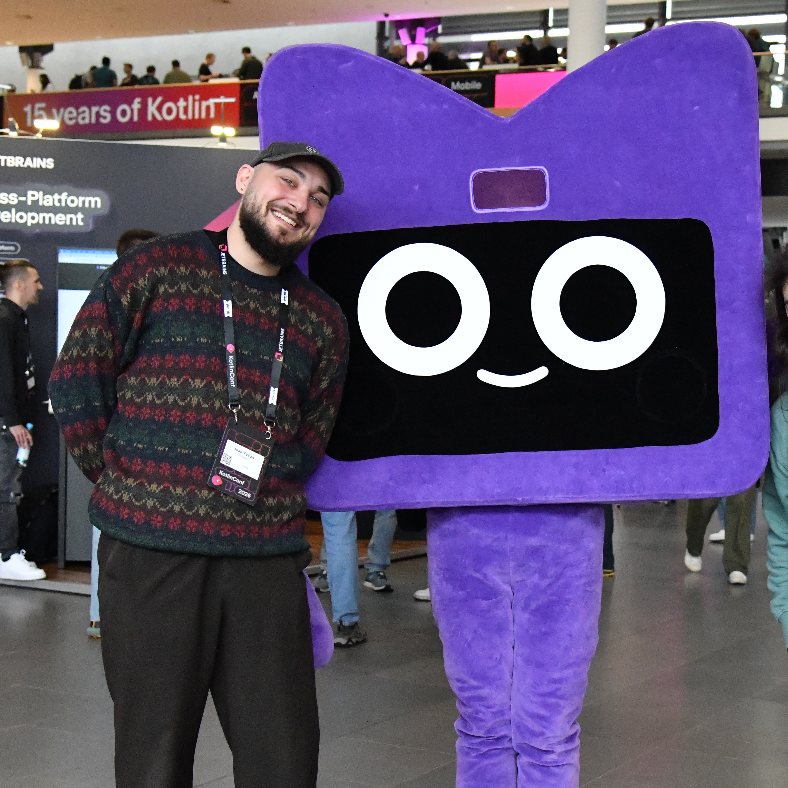
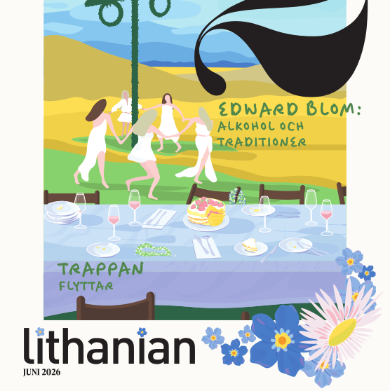
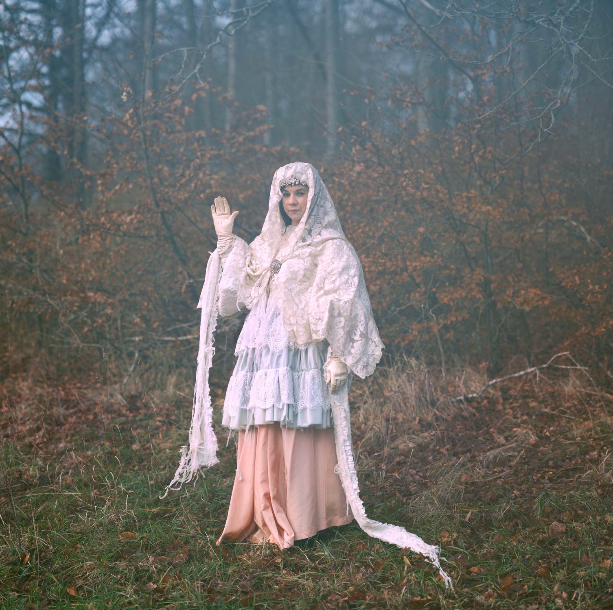
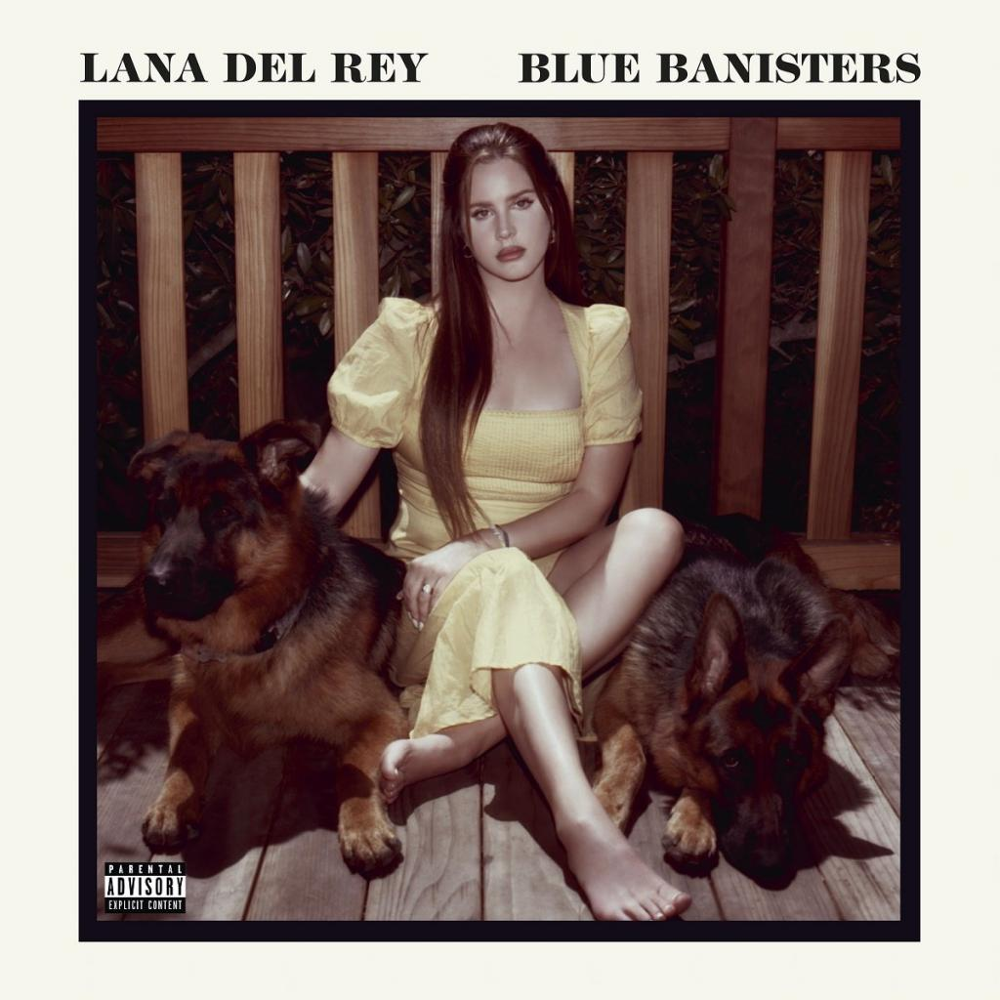
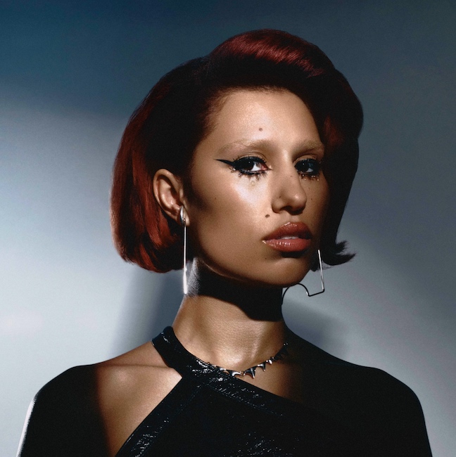
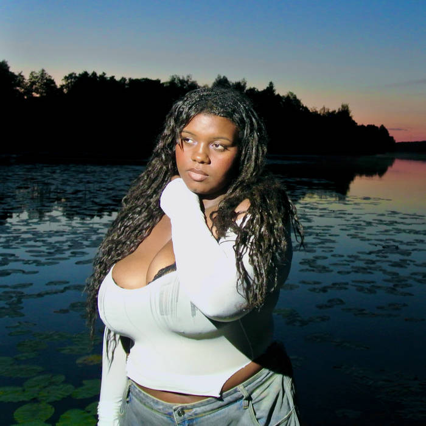

what are you doing?
this is a now page. if you have your own site, you should make one too!
my life is often busy, and i've been somewhat secretive when sharing details with family and friends. i thought this would be a great way to keep everyone updated on what i'm currently doing. i'll do my best to keep this page updated with any new happenings. thank you, Phillip Ridlen, for inspiring me with your now page!
this is what i'm doing as of may 31st 2026
‣ see what i have been up to previously
life 🌟

this month has involved quite a bit of traveling. i went to munich for a conference, and while i was in germany, i took the opportunity to spend a few days visiting a friend in berlin. after that, my best friend joined me in berlin, and we traveled together to innsbruck, where we stayed for one night. we then continued on to turino, italy, where we spent the rest of the week, as a birthday gift for him. he is turning 30 next month.
work 💼
Opera Software
i recently became one of the security champions for our team, alongside another colleague. this means we take on additional responsibility for cybersecurity-related matters in our projects and help promote security best practices within the team. i also attended KotlinConf for the second time, and in my opinion, it was even better than last year. there were plenty of great talks, and i had the opportunity to meet a lot of cool people. one of the highlights for me was remote compose, an android library for remote surface handling, or server-defined UI as we call it at opera. i was intrigued enough by the concept that i started working on a kotlin multiplatform port so we could potentially use it in our projects. that said, it seems jetbrains may already have plans to support this themselves. also, our summer interns will be joining next week. i will be mentoring some of them again this year, which i am really looking forward to.
organizations 🏢
LiTHe Hax
i have officially handed over the organization to tom englund, who has been involved with the organization in one capacity or another since its early days. unfortunately, we were unable to find a new treasurer before the transition, which means we will need to hold an additional annual meeting to fill the position. in the meantime, the previous treasurer is supporting the new board as a temporary solution to ensure the organization can continue operating with a complete board. although i have stepped down from my previous role, i will remain involved as an auditor and continue contributing remotely. we also recently gave the website a facelift, and i will keep managing some of our digital platforms for a little while longer before fully handing everything over to the new chairman. i am also planning to write one final post about LiTHe Hax on LinkedIn in the near future, so keep an eye out for that. on a personal note, it feels like a huge relief to finally have some extra time and the opportunity to focus on interests and projects i have wanted to pursue since i was a teenager. at the moment, i feel fairly finished with voluntary organizational work, though only time will tell what the future holds. that said, i am incredibly grateful for everything LiTHe Hax has become. watching the organization grow from an idea into something meaningful has been one of the most rewarding experiences of my life, and i am excited to see where it goes next. one thing i am certain of is that the organization will continue for at least another year, and that alone is something worth celebrating.
LiTHanian

we have now completed our final issue, which is actually being printed as i write this. i also received two medals in recognition of my engagement within LinTek, and i am happy to say that i successfully found a successor for the editor in chief role, which means the organization is moving forward once again. of all my commitments at LiU, this has probably been the most demanding one. it has challenged me in ways i did not expect and has been very different from any other role i have taken on. i am grateful for the experience and everything i learned from it, but i am also grateful that this chapter is coming to an end. i am excited to see how the organization develops in the future. one change on the horizon is that our printing company, LTAB, has been acquired by another company, which means some restructuring of our production workflow will be necessary for future issues. over the course of my engagement in this, i managed to publish seven magazines, with varying levels of quality and success. the issue i am most proud of is the latest one, which i hope is a sign of how much we improved along the way. more than anything, i am incredibly proud of the work that was accomplished and of both editorial teams i had the privilege of leading. thank you all for everything. once i have fully handed over the editor in chief role, freedom awaits!
hobbies ⚙️
programming
outside of work, i have not been doing much programming lately, apart from the app project i mentioned last month that i am building with a friend. we try to meet up a few times each month to work on it, and it has been a fun way to keep building things outside of my day job. with many of my commitments now coming to an end, i am hoping to dedicate more time to larger personal projects again. for the first time in quite a while, i feel like i have the space to focus on the kinds of things i have wanted to build since i was just a young hobby programmer. i am curious to see where that takes me. one thing i have noticed recently is that i have been writing more code without relying on ai tools. while ai has undoubtedly made me more productive in many situations, i sometimes miss the sense of exploration and engagement that came with solving problems entirely on my own. i do not think i will stop using ai, at least not for work, but i am interested in finding a balance and perhaps rediscovering some of the spark and curiosity that originally drew me to programming.
photography
i have finally found both the time and the motivation to get back into photography when traveling. it is a hobby that i have missed, and it felt great to pick up the camera again after a long break.


music
this has been my month with the lowest amount of music listening so far this year, and there are a few reasons for that. first, i have spent a significant amount of time traveling with friends, which naturally means fewer opportunities to put on headphones and listen to music on my own. in addition, i have been listening to more music on my dumb phone, which is not reflected in the statistics i usually track. as a result, this months numbers are lower than my actual listening habits would suggest.
songs played
942 plays
daily average
30 plays
biggest listening day
may 4th with 118 plays
top artist

Sara Parkman
top album

Blue Banisters by Lana Del Ray
top song

Escapism. by Raye
last played

Airforce Blue by Waterbaby
reading
i finally finished reading the survivors by alex schulman. it felt like a fairly heavy read, not necessarily because of its subject matter, but because i never really connected with it as much as i had hoped. even so, i wanted to see it through and finish it before moving on to the other books i have started reading. now that it is finally off my reading list, i am looking forward to returning to those other books and making some progress on them instead.
expert progress 🎓
the concept of reaching 10,000 hours to become a professional or an expert in a field is derived from Malcolm Gladwell's book "Outliers: The Story of Success". gladwell popularized the idea that achieving a high level of proficiency in any field typically requires about 10,000 hours of dedicated practice. this notion is based on the research of psychologist Anders Ericsson, who studied the practice habits of elite performers in various domains. i've been tracking my programming time since 2019, i officially crossed the 10,000-hour mark. the actual total is likely higher, considering i wrote my first program before i started tracking my time! please note that i include this jokingly; i don't necessarily believe in the idea of becoming an expert after 10,000 hours. i haven't given it much thought, and i certainly don't feel like an expert yet. that said, if you are feeling generous, you may now officially refer to me as an expert programmer.